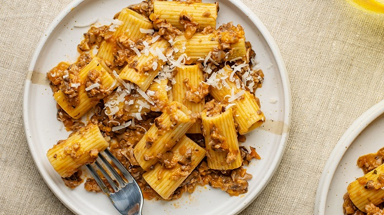

Homepage
Mushroom Bolognese

Description
Similar to other Bolognese recipes, but this one replaces meat with Portobellos and Enoki mushrooms
Serves 6 people
Ingredients
- 1½ teaspoons butter
- 1¼ teaspoons olive oil
- ½ pound portobello mushrooms, chopped
- ¼ cup chopped onion
- ¼ cup chopped carrot
- 2 tablespoons chopped celery
- 2 tablespoons white wine
- ½ cup beef broth
- 1¼ teaspoons tomato paste
- 1 teaspoon butter
- 2 ounces enoki mushrooms
- 3½ tablespoons heavy cream
- 1 pinch ground nutmeg
- salt and pepper to taste
Steps
- Melt 1 1/2 teaspoon of butter with olive oil in a large skillet over medium heat. Cook and stir the portobello mushrooms, onion, carrot, and celery until the vegetables are softened and beginning to brown, about 8 minutes. Transfer the mushroom mixture to a large saucepan.
- Pour the white wine into the skillet and bring to a boil, dissolving any browned flavor bits from the bottom of the skillet. Allow the wine to cook for about 2 minutes, until reduced, and pour into the saucepan. Stir the beef broth and tomato paste into the mixture in the saucepan, bring to a boil over medium-high heat, then reduce heat to low. Simmer, partially covered, until the beef broth has reduced and the vegetables are very tender, about 35 minutes.
- Melt 1 teaspoon of butter in the original skillet, and cook and stir the enoki mushrooms until lightly browned, 3 to 4 minutes. Remove the enoki, and chop. Stir the chopped enoki mushrooms into the sauce and simmer for about 10 minutes; stir in the heavy cream, and allow to heat through (do not boil). Season with nutmeg, salt, and pepper to taste.